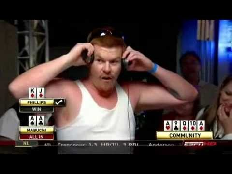
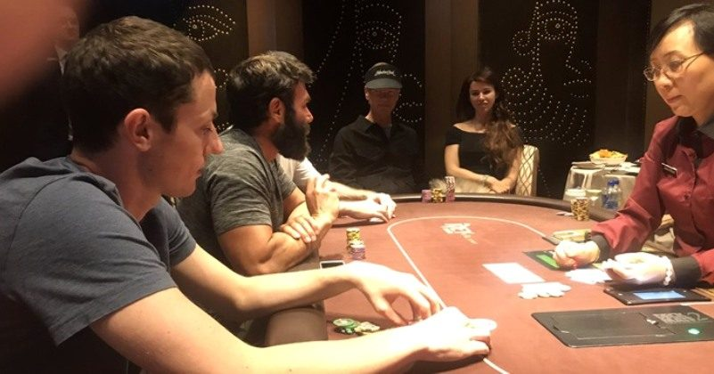
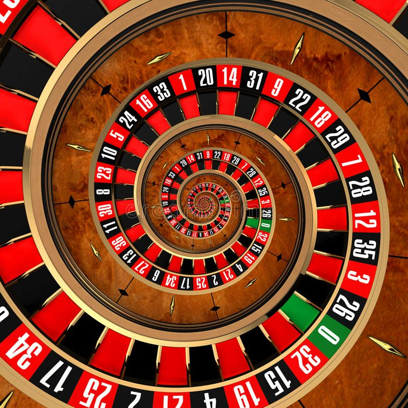
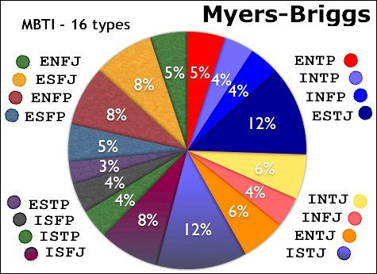
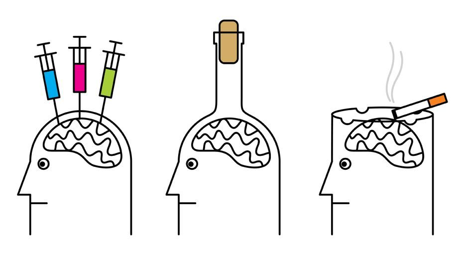

How To Avoid Becoming A Problem Gambler?

If you are chasing your losses for a long period of time you are greatly increasing the chance that you will turn into a problem gambler. It’s best to leave the table if you feel like you have no control over your tilt and cannot stop chasing. All long-term chasing is is a series of many mini chases. It’s crucial to catch yourself when you are playing catch-up, and leave the table if you can’t emotionally work your way out of it. If you ignore this, you’ll most likely end up in a hole of chasing more and more losses, to the point where you go bankrupt (this is a very realistic scenario in a game like No Limit Hold’em). The reason problem gamblers and losing poker players are considered the same thing, is because of the links between excessive tilt and problem gambling. And having a poor strategy in poker means that you are more likely to go on tilt, and how you deal with that tilt will determine whether or not you become a problem gambler.
What Exactly Is Tilt?

Doing emotional work to handle tilt is not only important, it’s absolutely necessary if you want to avoid becoming a losing poker player. Tilt is an underrated factor when it comes to poker. It is actually one of the biggest things that separates you from becoming a winning poker player compared with a losing poker player. All players eventually experience tilt, but the important factor is in how long each of those players stay tilted for. Tilt is broken into three parts: the first is when a tilt induced situation come up, the second involves the emotion response to the tilt induced situation, and the third is the deterioration of ones playing style or deviation from the norm that occurred from the emotional response.
How Does Tilt Affect Your Results In Poker?
Upswings and downswings inevitably come in poker. Staying off tilt during the downswings is the main thing that separates good poker players from bad poker players. Poker is an emotional game, more so than logic (for those of you that want a purely logical game I recommend chess). This internal struggle a player experiences called “tilt” can be seen from outside players; this is why you will here some players say “he’s on tilt!” as a form of teasing at the poker table. Usually, there is a player linked to the tilt induced situation. If the player wants to provoke the other tilted player further, he can poke more fun at them and increase their tilt, this is called needling. The tilted player will often feel the need to get revenge on this player, and the needler will continue to provoke these feelings as much as possible, since they know it’s going to result in the tilted player making even poorer decisions, and giving away even more money than they otherwise would have if they were not on tilt. At this stage, every player on the table would like the tilted player to stay on the table for maximum profit. Even the house will give the tilted player the red carpet treatment in order to get them to stay.
Best Type Emotional Strategy In Poker?

There are many strategies in poker players, we will quickly touch on some of the stereotypes, what to avoid falling into, and what to strive for. Players who have been playing over five years and use poker as an escape tend to have a very rigid strategy. Across the course of the game they are very unlikely to change their strategy and this usually results in a poor outcome. The problem with using poker as an escape from work or other areas is that poker requires an immense amount of concentration. Playing poker with work, personal or other issues on your mind means that you won’t have the concentration necessary for managing your emotions and proper strategy.
Tilt happens to the winning, break-even, and losing players, but how long each player stayed on tilt separates the winning players from the losing players. Losing players will stay at the table when they are tilted; however, they are unsuccessful in managing their own emotions. They will delude themselves into things things are getting better, when in fact they are chasing and using a suboptimal strategy. Losers will stay tilted for hours, winners will be tilted for a very short time only. For players that break-even, getting up and leaving the table is a common strategy; however, this isn’t the best strategy. Doing emotional management while losing but staying on the table is a superior strategy. Managing emotions could involve suppressing one’s emotions or trying to shape them into something more positive, like to get back on track with your strategy that you know is optimal. Winners have a rational reason to do the necessary emotion work and to get back top of their game as quickly as possible, since their default strategy is a winning one. Winning players are aware of their great default strategy, and also aware of the things that put them on tilt and prepare themselves for it.
Different Ways Players Handle Their Bankroll
Another difference between winning players and losing players is how they manage their poker money. No player should confuse their everyday living money with their gambling money. For poker players and other games, keeping a maximum spending limit of 10% of one’s bankroll is a safe amount for one session. It is a huge problem when players go over their designated spending limit, and maybe even use up their entire bankroll in one session, then start eating into their day-to-day life money. Problem gamblers tend to go over their session limit, whether they are playing poker of blackjack. After they lose all their bankroll they will gamble with one of their friend’s money, or even take money out from important family funds.
Are Casino Games The Same When It Comes To Emotions?

Gambling generally has a -EV (Negative Expected Value). This is evident from the amount of money going into casinos vs the amount of money being distributed out, using this logic everyone is doomed to lose. However, we know in games like poker this isn’t the case, some players consistently win. If there is a -EV in many games, it’s worth looking at what motivates everyone to play them in the first place. Each type of gambling serves a different purpose for the people involved. Slots gamblers are motivated by excitement and escape; sports bettors are motivated by money, challenge and socialising; and card gamblers (including poker players) are motivated by money, excitement, social interaction and challenge. Social interaction in poker is a double-edge sword when in comes to becoming a problem gambler. It can help in one way by having peers who can watch over and restrict you if your spending is going overboard, or your betting behaviour is getting out of control; however, the same peers also encourage you to continue to participate in the activity.
What Personality Types Are Motivated To Gamble?

There is no significant personality trait differences between social poker players and gambling addicts. Moreover, there is no significant personality variance between social gamblers and problem gamblers for any game. However, there was a difference between emotionally stable and emotionally unstable people and their gambling habits. What makes it even more interesting is that the emotionally stable people were more likely to gamble than impulsive types, since the emotionally stable people were more drawn to the positive expected reward. The biggest factor that determined what game a player would play when they enter a casino is whether they were a man or a women. Men were more likely to engage in games that required skill; women were more likely to engage in games that were 100% lucky. Money was the biggest motivating factor in both men and women, for both skill and luck games. Money is also the biggest motivator to why people said they would gamble or enter a casino in the first place. Men found the most entertaining part of gambling to be challenging other gamblers. Women were more likely to say imagining what they would do with the amount won to be the most entertaining part in gambling. The people that ranked higher on careful decisions and planning for their gambling actions were more likely to play skill based games than luck (such as poker). Gamblers who play skill-based games tend to favour playing online, whereas gamblers who played luck-based games tend to favour playing offline (usually this means in a casino). It is hard to say whether the fact that internet gambling continues to become increasingly popular is from the rise of the internet in the last 20 years, or that people are actually becoming more drawn to skill games. The former assumption is more reasonable.
Other Factors That Increase The Likelihood Of Becoming A Problem Gambler?

Drugs and alcohol will greatly negatively affect the performance of a poker player and their average results. The reason for this is that these substances will greatly negate the ability to perform the necessary emotional work to stay off tilt. As tilt is one of the main factors that lead to losing and becoming a problem gambler, alcohol and drugs increases the chances of becoming a gambling addict (even more so if you combine the drugs and alcohol together). Another factor that may ironically contribute to gambling addiction is passion. There are two types of passion: obsessive and harmonious. Obsessive and harmonious passions for poker both increase the likelihood of becoming a problem gambler, when compared with those who lacked passion for poker. This may be because those who lacked passion for poker simply didn’t play long or deep enough to risk getting into a serious enough financial debt. Luckily for us, online poker players are also less likely to become problem gamblers when compared with those who played solely live games :-).
Bibliography
Browne, B. R. (1989). Going on tilt: Frequent poker players and control. Journal of Gambling Behavior, 5(1), 3-21. Dufour, M., Brunelle, N., & Roy, E. (2015). Are poker players all the same? Latent class analysis. Journal of gambling studies, 31(2), 441-454.
Gandolfo, A., & De Bonis, V. (2015). Motivation, personality type and the choice between skill and luck gambling products. The Journal of gambling business and economics, 9(1), 30-46.
Morvannou, A., Dufour, M., Brunelle, N., Berbiche, D., & Roy, E. (2017). Passion for poker and the relationship with gambling problems: a cross-sectional study. International Gambling Studies, 17(2), 176-191.
Malkin, D. V., & Syme, G. J. (1986). Personality and problem gambling. International journal of the addictions, 21(2), 267-272.